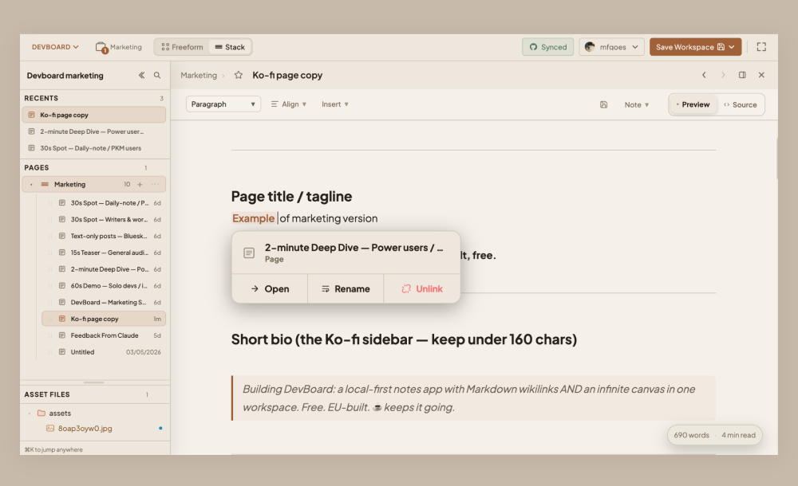
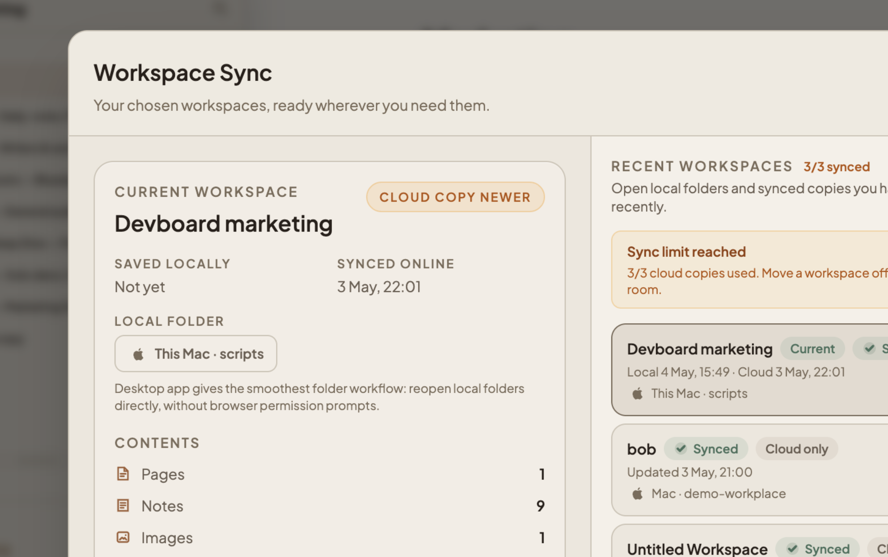
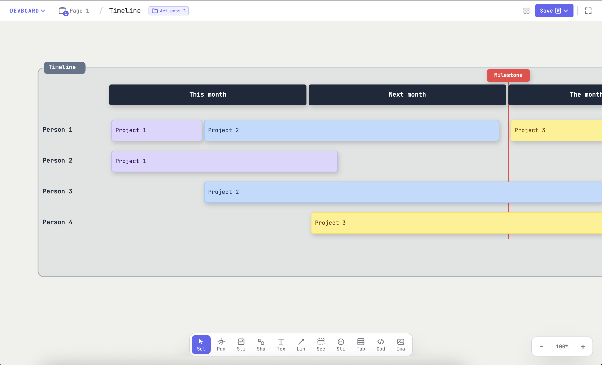

Clear your head.
Map your ideas.
A private workspace where your notes aren't just lists.
- Wikilinks, backlinks, and focus mode for writing
- Infinite canvas for visual thinking
- Your folder on disk — no cloud, no account

Notes that know about each other
Write in Markdown. Type [[ to link to another note. Drop @node: to reference a node on the canvas. A backlinks panel shows everywhere a note is mentioned — your characters, locations, decisions, and diagrams stay connected.

A folder on your disk
Open any local folder as your workspace. Notes are real Markdown files — open them in any editor, version them with git, sync them with anything. The file explorer sidebar lets you browse pages, notes, and assets without breaking your flow.

For when notes need to become a system
Switch to canvas mode for sticky notes, shapes, sections, and connector arrows that stay attached as you move things around. Plot a story structure, sketch an architecture, or run a retro — without leaving your workspace.

Built for people who think on the page
and on the canvas
Obsidian is great for notes. Notion is great for shared docs. FigJam is great for whiteboarding. DevBoard is for people who want the useful parts of all three in one free, local workspace: writers, worldbuilders, students, solo makers, and anyone who moves between writing and mapping ideas.
One workspace, two modes, your folder
Everything that ships in DevBoard today — the writing tools, the canvas tools, and the shared workspace underneath.
Linked notes
Type [[ to link to another note. A backlinks panel shows everywhere a note is referenced. Use @node: mentions to point at a node on the canvas from inside a doc.
Focus mode
Full-screen, distraction-free writing. Toolbar fades away, leaving only your document. Stack view lets you browse all notes as a vertical list when you need the bird's-eye view.
Your workspace
Open any local folder as a workspace. Notes are real Markdown files on disk. Multiple canvas pages live alongside them. Quick switcher (⌘K) jumps between everything.
Infinite canvas
Pan with spacebar + drag or middle mouse. Pinch-to-zoom. Dot grid tracks your position. Re-center anytime.
Sticky notes
Place, drag, resize, double-click to edit. Eight color swatches. Copy, paste, duplicate — or Alt+drag for instant copies. Great for brainstorming game mechanics or story beats.
Smart connectors
Bezier arrows snap to anchor points and follow nodes when you move them. Straight and orthogonal styles too.
Shapes
Rectangles, ellipses, diamonds, triangles. Each takes a text label and connects to any other node.
Text blocks
Standalone text with bold, italic, underline, bullet lists, links, alignment, and color. No background in the way.
Code blocks
Drop syntax-highlighted code snippets onto the canvas — handy when you need to reference exact logic while mapping out a system.
Undo / redo
Full undo/redo stack. Alignment guides appear while dragging near other nodes' edges or centers.
Groups & sections
Group nodes with ⌘G so they move together. Section labels mark regions. Lock nodes to freeze layout elements.
Export & share
Export documents to Markdown, boards to PNG or JSON. Generate a shareable link with the full board encoded in the URL hash — no server.
Tasks
Create basic to-do lists, with subtasks, organise them as you want on your board.
Images
Drop PNG or JPG files directly onto the canvas. Works offline. Load a whole workspace folder for multi-file projects.
Stickers
Drop emoji stickers on the canvas for quick visual markers — tag scenes, flag mechanics, mark world-building regions, or just set the vibe.
Open a folder and start writing
Free forever. No account. Works in your browser or as a native app on macOS, Windows & Linux.
Stay in the loop
Get notified when new features ship. No spam, unsubscribe anytime.